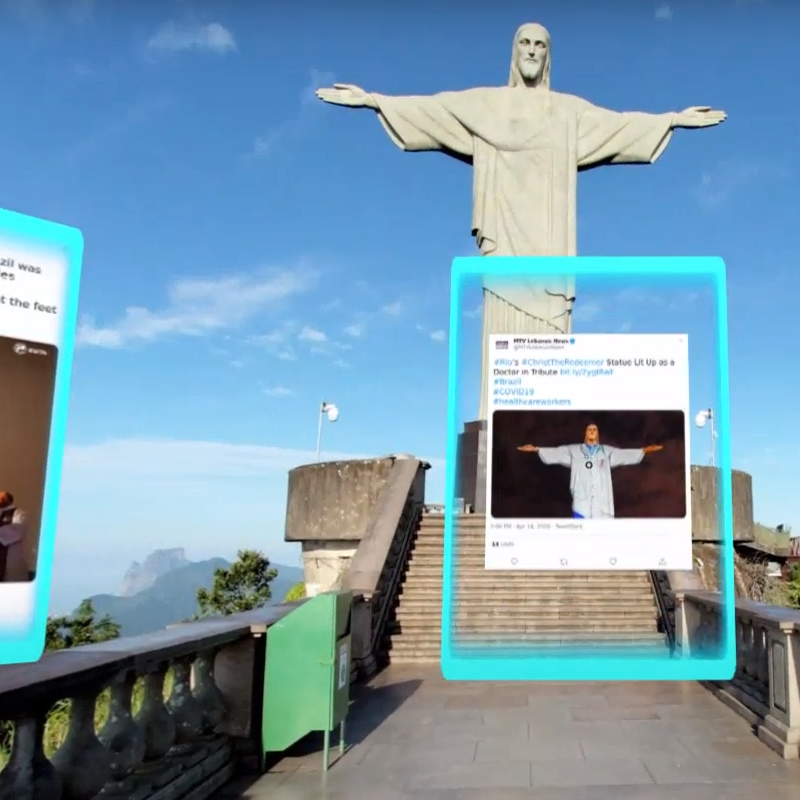
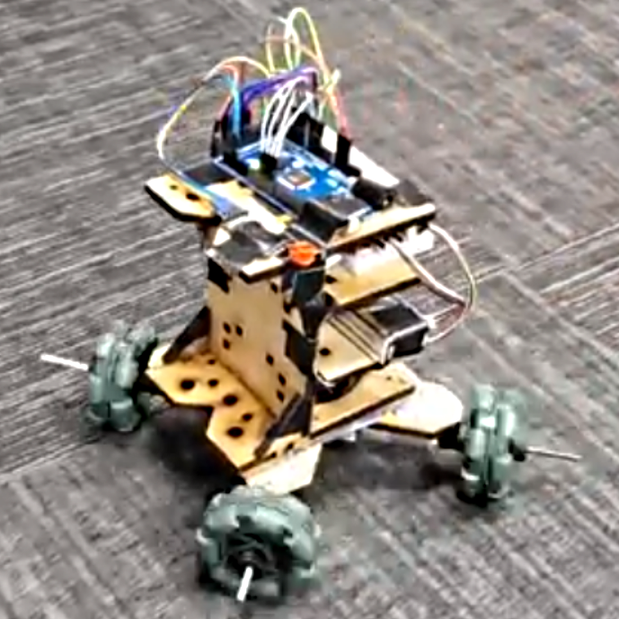
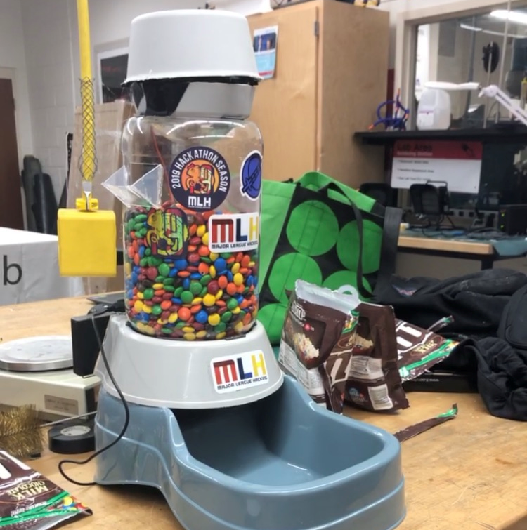
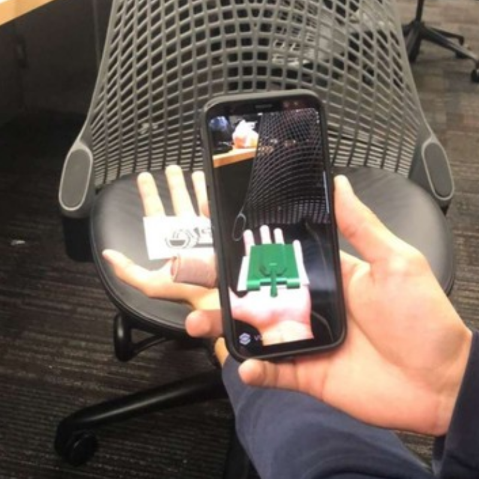

Car Simulation
Car Simulation
x
Car Simulation
For the models, I used Blender to create a high-poly Mercedes AMG GTR and a racetrack using 3D mesh modeling. Check out the models at my modeling page! For the physics of the game, I used Wheel Colliders and a Rigidbody on the car model to simulate the movement. The drag and angular drag of the car was adjusted along with the forward and sideways friction for the car and the Wheel Colliders, which simulates the drifting. To simulate the actual car, I used the official Mercedes-Benz page to get the specs of the car. The car is configured as a 7-speed, which the gear ratios are also configurable in the master script; the gear ratios are in-line with the official gear ratios of the AMG GTR. The speed and RPM are also mocked on the actual gear shifts on the automatic AMG GTR, both redline RPM, max RPM, 0-60 time, and top speed. For the visuals, I rendered the simulation in the HD Rendering Pipeline (HDRP) to get High Quality Visuals and in turn, that allowed for me to use custom shaders and maps. The car and finishing flag were done using the HDRP StackLit shaders, while the asphalt (of the road), the out/inskirts, and the grass were all done using seamless tiles of the materials, with custom height maps, bump maps, and normal maps that I generated using Adobe Photoshop 2019. This allowed for light of the road and grass to reflect similar to real world lighting bounces off of the materials. The bump map and height map were used to get the car to bump a little, or else the car would drive seamless on the road, as if it were a flat plane. The UI holds a togglable Manual/Automatic button, speed, RPM, gear, lap, and timer.TweetMap360
x
TweetMap360
TweetMap360 was a project for KnightHacks2020; it fiinds tweets around the world and lets you dive in to a 360 panorama interface where you can see trending tweets in that location. We used MapBox, React, and A-Frame to create it. Used HTML, CSS, Javascript, React, and the three.js library to work on the VR WebApp. TweetMap360 takes trending Tweets from around the world and uses their geo locations to lay them out on a dynamic map view while clustering together tweets based on their proximity to certain global hotspots. The map view allows users to seamlessly zoom in/out of different parts of the world and see the most relevant tweets as well as play their embedded media or navigate directly to the tweet itself. Similar to some other map focused experiences, TweetMap360 also incorporates an interactive 360 experience allowing the user to be pulled down into different promoted locations and immersed in the respective 3D environment. Current promoted locations include Times Square (New York City), University of Central Florida (Orlando), and Rio de Janeiro. In this 360 experience, the trending tweets of the locations are rendered around the user and give the user the opportunity to hover over the tweets and focus on them in 3D space. This feature is available to desktop/mobile/and VR headset users alike."Pi" Robot for IEEE's SouthEastCon2020
x
I was on the team to write the Arduino C++ code and worked with 2 other members so we could have the robot accurately and precisely navigate the board to pick up blocks. In this process, we also had to consider how to set up the blocks so we could get the shortest path from each block, while being able to pick up a maximum of 3 blocks at a single time. For this, two of us on the team used our knowledge of Graph Theory to use Djikstra's Algorithm to find the minimum spanning tree between each block, which we considered a vertex.
Pi Robot
The IEEE Competition Hardware Team built this for SouthEastCon2020's Hardware Competition in Raleigh, NC. We found out the conference was cancelled as we walked in to the check-in table; it was called-off one hour before the conference started. For the robot, we began the first month just by holding meetings twice a week going over possibilites and ideas for the robot- it had to be able to pick up blocks in order of the digits of pi autonomously, whichever team could get the most won.I was on the team to write the Arduino C++ code and worked with 2 other members so we could have the robot accurately and precisely navigate the board to pick up blocks. In this process, we also had to consider how to set up the blocks so we could get the shortest path from each block, while being able to pick up a maximum of 3 blocks at a single time. For this, two of us on the team used our knowledge of Graph Theory to use Djikstra's Algorithm to find the minimum spanning tree between each block, which we considered a vertex.
Texas Instruments Automatic Pet Feeder
x
Texas Instrument Automatic Pet Feeder
KnightHacks2019 was my first hackathon; I worked with my team to build a automatic pet feeder that works either on time or when the user manually presses the "feed" button. We used a MSP430 and competed in the "Best Use of Texas Instruments" challenge, which we ended up getting first place in. To build the app, we used Android Studio that communicated with the board through Bluetooth. It would send a flag when either the directed time was reached or when the button is pressed. The MSP430 allowed for use in Code Composer Studio and came with a lot of specialties such as Bluetooth compatability which we took advantage of for the heart of this project. For the structure of the feeder, we salvaged a manual pet feeder and instead loaded it with a servo to be able to spin inside of the casing, allowing the food to be dropped down in to the food dish.AR Tank Game
x